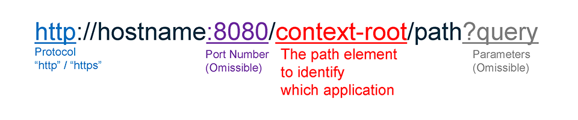

Jakarta REST (正式名称 Jakarta RESTful Web Services) は、個々の HTTP リクエストをハンドリングするための技術です。正式名称が示すように、本来は Web サービス向けに開発されたものですが、広く HTTP 全般について適用することができます。Jakarta REST はかつて JAX-RS と呼ばれていた Java EE の中核機能 (Java EE 6 から導入) であり、現時点および当面の間は JAX-RS と言った方が通りが良いかもしれません。
皆様の中には「サーブレット」という名前を耳にしたことがある方もいらっしゃるかと思います。サーブレットは古くから Java に存在している、HTTP を取り扱うための技術です。Jakarta REST は、多くの場合においては、そのサーブレットの優れた代替手段となっています。
Jakarta REST は Jakarta EE の中核機能ですが、同時に Eclipse MicroProfile の基本機能でもあります。すなわち、すべての MicroProfile ランタイムは、Jakarta REST を完全に実装していなければなりません (同様のことが CDI、XML Binding、JSON Processing および JSON Binding についても当てはまります)。
さて、Jakarta REST の "REST" とは、大雑把に言うと Web アプリケーションを構成するための基本的なアイデアのようなものです。初出は Roy T. Fielding の博士論文 "Architectural Styles and the Design of Network-based Software Architectures" ですが、現在では Web アプリケーション / Web サービスを支える重要な理論になっています。
REST は以下に示す 3 つの要素から成り立っています。
以下に URL の書式を示します。URL は Web ブラウザのアドレスバーに入力するものなのでご存じの方も多いとは思いますが、Jakarta EE で特徴的な部分を含めておさらいしておきます。

HTTP 通信の基本についておさらいしておきます。まず、一番多く使われるであろう GET メソッドの場合から見てゆきます (Figure 2.1)。
次は POST メソッドの場合です (Figure 2.2)。大まかな流れは GET メソッドの場合と変わりありませんが、いくつか異なる点があります。
Jakarta REST を使用する場合は、以下に示すような Application クラスのサブクラス (クラス名は任意) を作成して、クラス・パス上に配置します。
import javax.ws.rs.ApplicationPath;
import javax.ws.rs.core.Application;
/**
* Register REST resources.
*
*/
@ApplicationPath("app")
public class MyApplication extends Application {
}@ApplicationPath アノテーションのパラメーターは、Jakarta REST でコンテキストルートの次に来るパス要素を示しています。ここでは "app" としていますが、context-root/app 以下のパスが Jakarta REST で処理する URL の範囲となります。コンテキストルート以下のすべてを処理したい場合は、ここを / とするか、空文字列にしてください。
Jakarta REST では、個々の HTTP リクエストを、対応づけられたメソッドの呼び出しによって処理します。これらのメソッドを含むクラスをリソースクラスと呼び、Jakarta REST では他のクラスと区別して扱われます。
import javax.ws.rs.Consumes;
import javax.ws.rs.FormParam;
import javax.ws.rs.GET;
import javax.ws.rs.POST;
import javax.ws.rs.Path;
import javax.ws.rs.Produces;
import javax.ws.rs.QueryParam;
@Path("some")
public class SomeResource {
@GET
@Produces("text/html")
public String handleGet(@QueryParam("id") String id) {
return "<!doctype html>"
+ "<html>"
+ "<head>"
+ "<title>HTTP GET Test</title>"
+ "</head>"
+ "<body>"
+ "<h1>HTTP GET Test Result</h1>"
+ "<p>Query Parameter: <strong>" + id + "</strong></p>"
+ "</body>"
+ "</html>";
}
@POST
@Consumes("application/x-www-form-urlencoded")
@Produces("text/html")
public String handlePost(@FormParam("data") String data) {
return "<!doctype html>"
+ "<html>"
+ "<head>"
+ "<title>HTTP POST Test Result</title>"
+ "</head>"
+ "<body>"
+ "<h1>HTTP POST Test Result</h1>"
+ "<p>Form Parameter: <strong>" + data + "</strong></p>"
+ "</body>"
+ "</html>";
}
}リソース・クラスには @Path アノテーションが付加されます。@Path アノテーションのパラメーターは、処理する URL の要素を示します。ここでは "some" としているので、処理対象の URL は、context-root/app/some となります。
HTTP リクエストを処理するメソッドには、@GET、@POST などメソッドに対応づけるアノテーションを付加します。また、リクエストは引数に対応づけられ、処理結果の戻り値はレスポンスに対応づけられます。@Consumes アノテーションはリクエストの MIME タイプ（すなわちデータ型）、@Produces アノテーションはレスポンスの MIME タイプをそれぞれ表しており、リクエスト/レスポンスを引数/戻り値とマッピングするための情報となります。
2.4.3. GET リクエストの処理
では、GET リクエストを処理するメソッドの基本形について見てゆきましょう。この例では、クエリー・パラメーターを含む GET リクエストを受け取り、レスポンスを HTML として返ます。
1. まず、リクエストがメソッドの引数にマッピングされます。@QueryParam アノテーション (Table 2.2 参照) はクエリー・パラメーターを引数に結びつけるものですが、ここでは "id" というクエリー・パラメーターを String クラスの引数 "id" にマッピングしています。
2. 次に、取得したリクエストをもとに、レスポンスの内容を作成してゆきます。
3. 最後に、レスポンスとなる HTML を String クラスの戻り値として返します。これがレスポンスとなります。
2.4.4. POST リクエストの処理
続いて、POST リクエストを処理するメソッドの基本形を示します。この例ではフォーム・データを受け取り、レスポンスを HTML としとして返します。
1. まず、フォーム・データがメソッドの引数にマッピングされます。@FormParam アノテーション (Table 2.2 参照) は、フォーム・データのパラメーターをそれぞれの引数に結びつけるものです。GET の時にご紹介した @QueryParam と似たような働きをします。
2. 次に、リソースを更新する処理を行い、レスポンスの内容を作成してゆきます。
3. 後は、GET の場合と同様です。
リクエスト処理中にエラーが発生した場合は、ランタイム例外 WebApplicationException またはそのサブクラスをスローします。WebApplicationException にはステータス・コード (Table 2.1) を設定します。
※主要なエラー・ステータスに対応するサブクラスが用意されています。
WebApplicationException (またはそのサブクラス) 以外の例外をスローした場合は、ステータス 500 (Internal Server Error) が自動的に設定されます。また、例外をスローせずにメソッドが終了した場合は、ステータス 200 (OK) が自動的に設定されます。
Jakarata REST には様々な機能が用意されています。
以上のように、Jakarta REST だけであらゆる HTTP リクエストを処理することができます。ただし、画面遷移については HTML を組み立てるためのコーディング量が非常に多くなるため、Jakarta MVC (Eclipse Krazo) や、Jakara EE に含まれる Jakarta Server Faces といった画面遷移に重点を置いたフレームワークを代わりに使用することが多いです (参考までに、Jakarta MVCは Jakarta REST から発展して出来上がったフレームワークです)。
※上述の通り、Jakarta REST で HTML ページを扱う場合はコーディング量が非常に多くなります。サンプルでは簡易的なテンプレート・エンジン (下記) を作成してコード記述量を削減しています。
| Code | Description | Exception |
|---|---|---|
| 200 | OK | - |
| 201 | Created | - |
| 202 | Accepted | - |
| 204 | No Content | - |
| 300 | See Other | - |
| 304 | Not Modified | - |
| 307 | Temporary Redirect | - |
| 400 | Bad Request | BadRequestException |
| 403 | Forbidded | ForbiddenException |
| 404 | Not Found | NotFoundException |
| 405 | Method Not Allowed | NotAllowedException |
| 406 | Not Acceptable | NotAcceptableException |
| 415 | Unsupported Media Type | NotSupportedException |
| 500 | Internal Server Error | InternalServerErrorException |
| 503 | Service Unavailable | ServiceUnavailableException |
| アノテーション | 設定される値 |
|---|---|
| @QueryParam | クエリー・パラメーターの値 |
| @FormParam | フォーム・パラメーターの値 |
| @PathParam | URI の一部 |
| @MatrixParam | Matrix URI の属性部分 |
| @HeaderParam | リクエスト・ヘッダーの値 |
| @CookieParam | クッキーの値 |
| (なし) | リクエスト・ボディー |
| Java クラス | MIME タイプ |
|---|---|
| byte[] | 任意の MIME タイプ (*/*) |
| String | |
| InputStream | |
| Reader | |
| JavaBean (XML Binding) | text/xml |
| application/xml | |
| JavaBean (JSON Binding) | application/json |
| MultivaluedMap | application/x-www-urlencoded |
| Boolean | text/plain (プリミティブ型は auto-boxing) |
| Character | |
| Number |